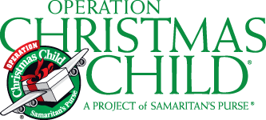
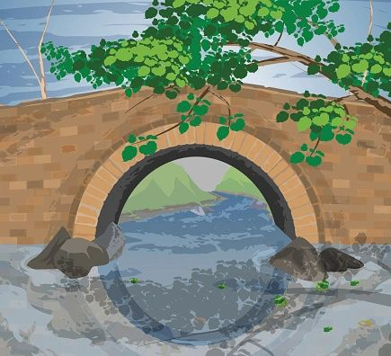
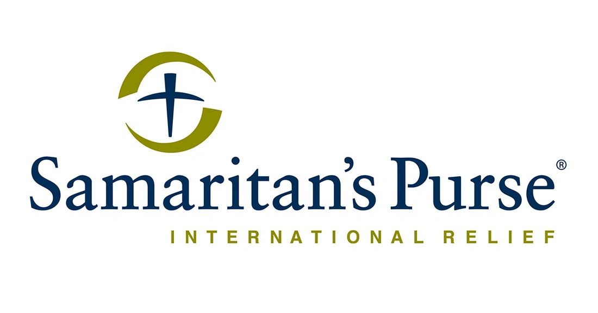
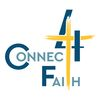
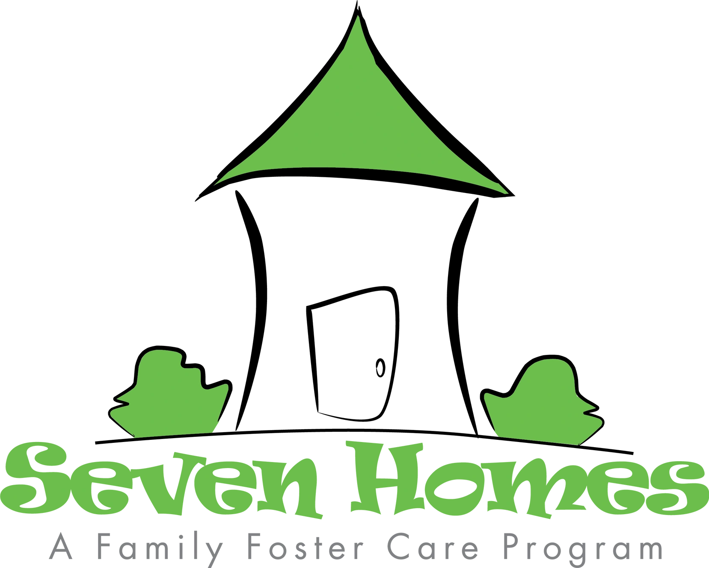
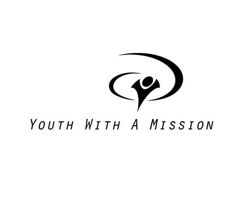
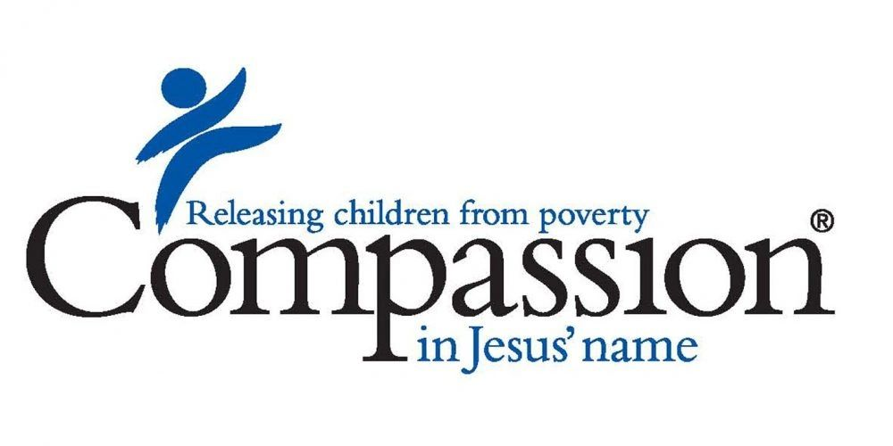

At PRCC we firmly believe that one of our primary callings is to share the love of Christ in practical ways. We strive to be the hands and feet of Christ by loving people locally and across the globe; feeding, clothing and supplying spiritual needs so they have the opportunity to know and love Jesus.
HOPE FOR KENYA'S KIDS
The mission at Hope for Kenya's Kids is to empower Kenya’s future by providing school sponsorships that nurture the whole child — offering quality education, spiritual development, and family support including nutrition programs. We believe that every child deserves the opportunity to learn, grow, and thrive in a supportive community.
SAMARITAN'S PURSE OPERATION CHRISTMAS CHILD
Their mission is to demonstrate God’s love in a tangible way to children in need around the world. The gift-filled shoebox is often the first gift many of these children have ever received.
https://www.samaritanspurse.org/what-we-do/operation-christmas-child/

16 Cent Ministry (CHURCH UNDER THE BRIDGE-GREENSBORO)
Reaching out to Greensboro's homeless community every Saturday at 6:00pm. This is done by the 16 Cents Ministry Under the Bridge at 300 Spring Garden Street. Each meeting includes a hot meal, fellowship, worship through music and God's word and love. *PRCC is currently collecting winter clothing for them.

SAMARITAN'S PURSE
A nondenominational Christian organization providing spiritual and physical aid to victims of war, natural disasters, disease, famine, poverty and persecution in more than 100 countries with the purpose of sharing God’s love through His son Jesus Christ.

SENIOR MINISTRY
PRCC regularly collects personal hygiene items, puzzle books, socks, cards, anything to make life easier and more interesting for the seniors at Brookdale NW Senior Living in Greensboro. We deliver the items and often visit the residents. Some have no families and they really appreciate us sharing our time and gifts.
https://www.brookdale.com/en/communities/brookdale-northwest-greensboro.html
GREENSBORO URBAN MINISTRY
The Greensboro Urban Ministry Food Pantry has provided food for people at risk of hunger in Guilford County for over thirty years. Food insecurity in Guilford County is a serious problem with nearly 90,000 people living with food insecurity.
CONNECT 4FAITH
The Connect4 Faith Ministry is a local ministry based in Alamance NC
Their mission is to connect Christians together to share the love of Christ with those affected by, or at risk of, human trafficking and/or sexual abuse. Through their three-step system of prevention, intervention and transformation, they empower individuals to change their lives through faith and community engagement

7 HOMES - A FOSTER CARE AGENCY
Seven Homes is a Christian faith-centered foster care agency dedicated to providing safe, loving, and nurturing homes for children in North Carolina. We empower foster families through comprehensive trauma-informed training, ongoing support, and a vibrant community that cultivates growth and connection for foster parents, birth families and adoptive parents.

Youth With A mission (ywam)
Youth With A Mission is a global movement of Christians from many cultures, age groups and Christian traditions, dedicated to serving Jesus throughout the

Compassion International
As a Christian charity, we believe that serving Jesus means serving the most vulnerable. We provide children living in poverty with the care they desperately need, from meals and tutoring to medical care and encouragement.
When children are cared for — mind, body and soul — they know they’re loved and valued by Jesus. This truth empowers them to reach for and achieve freedom from child poverty in Jesus’ name

Freedom House
Freedom House exists to bring hope and healing to mothers struggling with addiction, and to the children affected by it. Our mission is to provide Christ-centered, long-term recovery that breaks the cycle of addiction and equips families to thrive.
Winston Salem Rescue Mission
Helping our hurting neighbors find hope and healing through the transforming gospel of Jesus Christ. Programs include
Addiction Recovery
Meal Programs
Clothing
Medical and Dental
Connect with us
- https://hopeforkenyaskids.org/about-us/
- https://www.samaritanspurse.org/what-we-do/operation-christmas-child/
- https://www.facebook.com/underthebridgegreensboro/
- http://www.samaritanspurse.org/
- https://www.brookdale.com/en/communities/brookdale-northwest-greensboro.html
- https://www.greensborourbanministry.org/
- https://www.connect4faith.org/connect.html
- https://www.7homes.org/
- https://ywam.org/about-us
- Christian charity
- mind, body and soul
- https://www.compassion.com/
- https://www.helpfreedomhouse.org/
- https://wsrescue.org/
- www.facebook.com
- www.godaddy.com